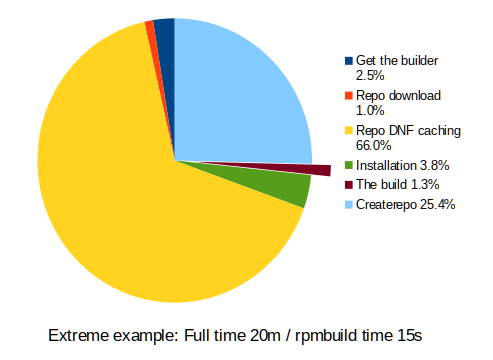

Statistics
- Users with projects: 3 171
- Projects: 19 228
- Storage: 13TB of packages in repos (copr-be)
- AWS EC2 16TB volume (max)
- Weekly snapshots
Architectures
- native builds needed, but armhfp --forcearch
- x86_64 on-premise, fallback to AWS
- s390x in IBM Cloud
- ppc64le on-premise, fallback to OSUOSL
- aarch64 AWS only
Througput considerations #2
- appstream-builder is slow
- Dnf is slow for large projects

Build timeouts
- Bugs in spec files that hang the build
- What is the best timeout value? Max allowed timeout value?
- Build timeout needed tweaks, 5h default, Blink!
Fun facts
- ivyxxcspcqlaocvjbghawvbdartwsfffurhnqzlwvsbgieweawfntu\
wecdcminmiaunqteqgbrfuxppntjdvyvsswxwepnbfqstnrnsotrhn\
dihkudyahthaxatviwrwtgllwbqhibouqctrxtypac
- Batches and llvm
- SHA-256 signatures, obs-sign
Users' demand
- More powerful builders
- Auto-rebuilds for dep-changes
- Easier Copr deployment, OpenShift attempt
In Copr team we ...
- Develop, well.. Copr, Mock, Tito, DistGit, Resalloc, ..
- Deploy Fedora Copr (with Fedora Infra!)
- ... with interesting limits and quotas
- ... and with Packit integration
- Keep minimal barriers for building and distributing
- Push the packaging stack to the limits
- Talk on #fedora-buildsys (libera.chat)